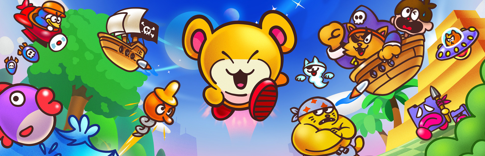

Biomes & Map
EA v1.0 — 2 primary biomes, 7 points of interest. Coordinates relative to your pod (0,0).

Resources: Titanium, Water Slugs, Copper, Quartz
⚠️ Threat: Safe
Resources: Quartz, Silver, Lucifer Rotsacs. Unlock: Digest Biomod.
⚠️ Threat: Safe
Power modules, Scanner fragments, Habitat Builder blueprints.
⚠️ Threat: Cautious — aggressive creatures possible
Old structures, Titanium, Copper, advance equipment caches.
⚠️ Threat: Cautious
Historical site, rare resources, story progression items.
⚠️ Threat: Cautious
Black Box signals, story-critical items, advanced blueprints.
⚠️ Threat: Dangerous — Leviathan encounters likely
Wanderer ruins, Bloom Canker purification site, Heat Resistance unlock.
⚠️ Threat: Extreme — Leviathans active
Vehicle storage, advanced crafting, chapter completion.
⚠️ Threat: Cautious